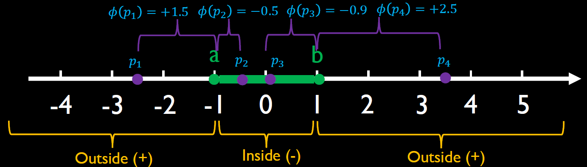
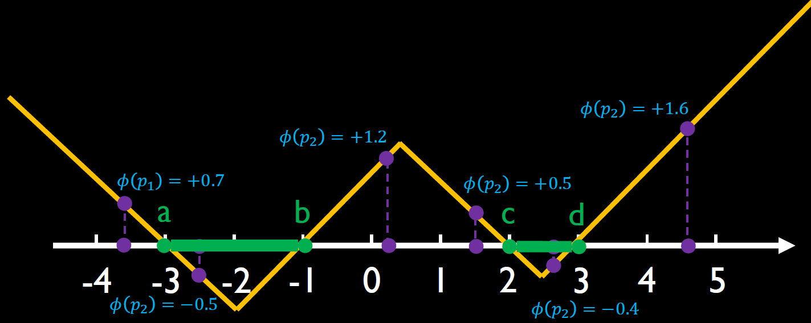
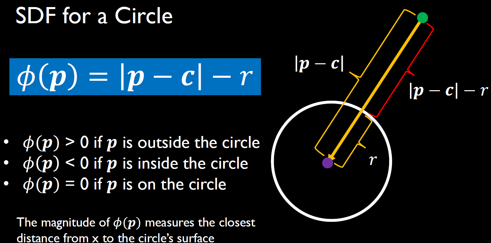
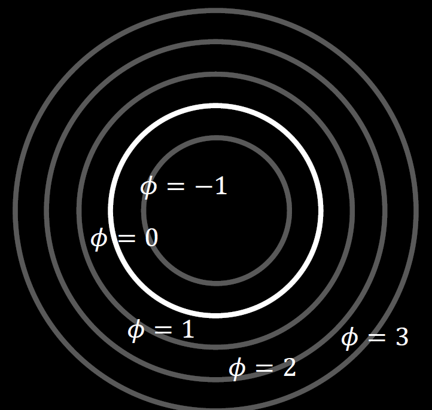
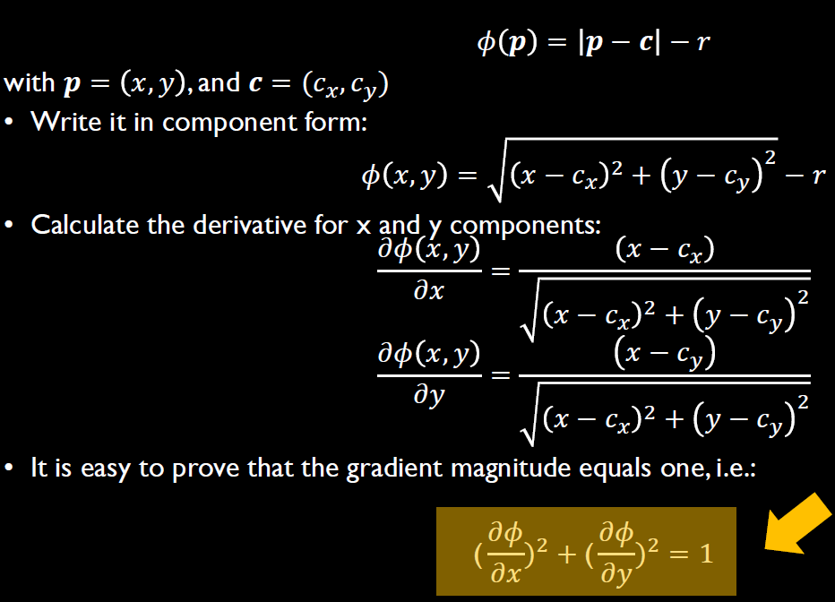
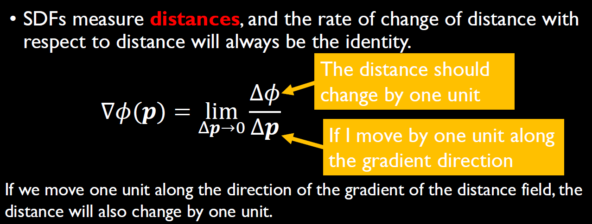
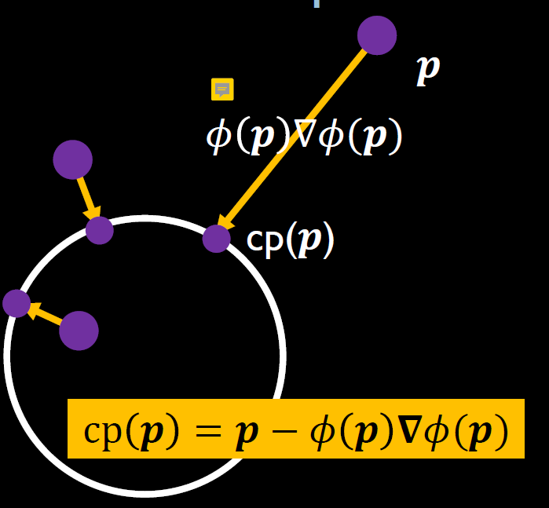
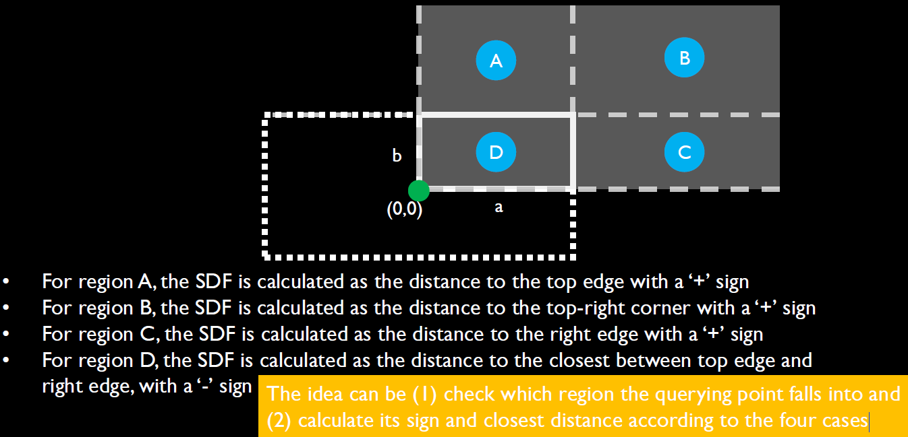
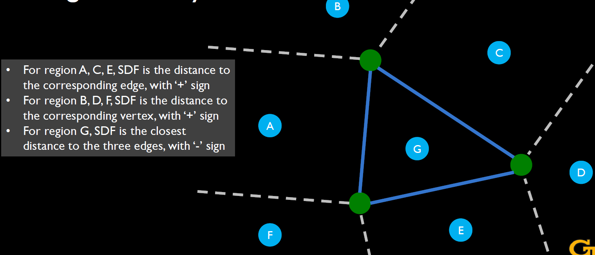
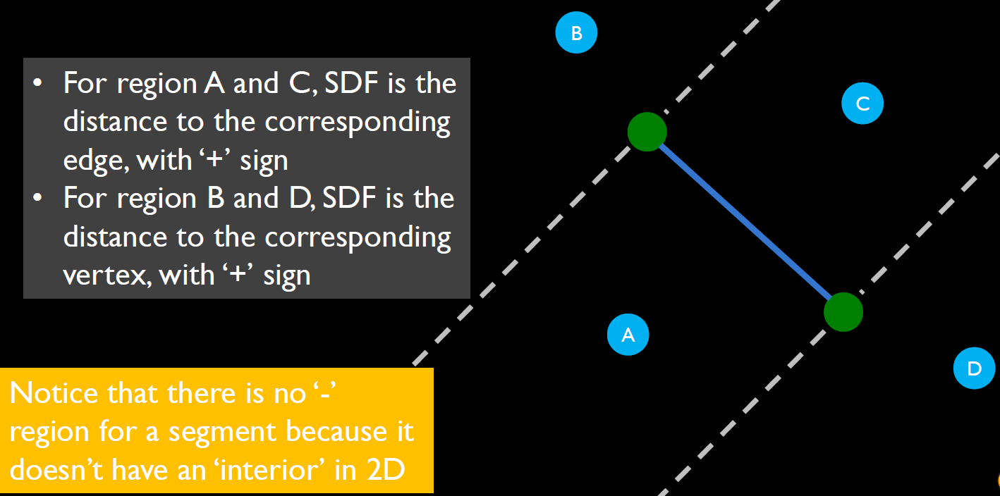

CS 8803 CGA - SDF Foundation
credit for Prof. Bo Zhu’s CS 8803 CGA
Intro
Some shapes are not easy to be represented by triangle meshes.
- Fractals: A fractal shape takes a mathematical expression or recursive program as its
representation, which will be prohibitively expensive to convert to a mesh. - The ocean surface animation is very complicated, which involves a lot of shape merging and splitting; and its shape is changing all the time.
- Procedural Terrain
Interesting: https://iquilezles.org/
Signed Distance Function (SDF)
1D Distance Function
Distance and Signed Distance
Distance
- A scalar value measuring how far apart two points are
- A distance is always positive (or zero)
Signed Distance
- Use a ‘-’ or ‘+’ sign in front of the distance to indicate if the point is inside or outside of the interface defined by a given point in a 1D axis.
- For 1D case, we assume a point is inside (‘-’) if it is on the left of the given point and outside (‘+’) if it is on the right of the given point (just our assumption!).
SDF for a point
- UDF Example: d(x) = |x-1|, d(x) is called distance function; it is also called unsigned distance function (UDF) to distinguish from the signed distance function.
- SDF Example: Similarly,
Derivatives of SDF:
Think of the visuals SDF to any point x on a 1d axis, it seems that we are just translating the function shape on x-axis according to x, and the function shape never changes. That is to say, the derivatives of the 1d SDFs are the same - always 1.
SDF for a segment
Assume we have a segment ‘ab’ with its two endpoints a and b.
- If the point is inside the segment, the sign is negative; if the point is outside
the segment, the sign is positive. - Define the signed distance from a point ‘p’ to this segment ‘ab’ as the shortest distance to one of its two endpoints (i.e., on its boundary).


Summary of 1D SDF
- The sign (-/+) indicates if the given point is inside/outside the given object
- ‘-’ always indicates inside; ‘+’ always indicates outside
- The magnitude of SDF indicates the closest distance from the point to the boundary of the object
These properties also apply to higher dimensions.
2D Distance Function
Goal
- A function to determine whether a given point is inside, outside, or on the boundary of an object
- A function to provide the closest distance from the point to the circle.
Definition
- The closest distance from a point to the boundary of the object is the shortest distance between the point and any location on the object’s boundary.
- Mathematically, this distance is measured along a straight line that is perpendicular to the boundary at the point where it touches.
- The magnitude of defines the closest distance from p to the boundary of the object; the sign of indicates if p is outside (+) or inside (-) the object. p is on the circle iff = 0
Examples
SDF for circles

Visualize SDF for circles with isocontours.

SDF Derivatives
See the figure below calculation the gradient of 2D SDF gradient. It turns out that SDF have a gradient of length one everywhere.

PS:
Difference Between Gradient and Derivatives
- Derivative: A derivative is a measure of how a function changes as its input changes.
For a function of multiple variables (e.g., ), we can calculate partial derivatives and , which represent the rate of change of the function along thex-axis and y-axis, respectively. - Gradient: The gradient is a vector that combines all the partial derivatives of a function.
For , the gradient is: .
The gradient points in the direction of the steepest increase of the function, and its magnitude gives the rate of change in that direction. - Gradient Magnitude:
The magnitude of the gradient vector is the Euclidean norm:
.
Why does SDF have a gradient of length one everywhere?

For an arbitrary point x in the 2D domain, the magnitude of its gradient always satisfies: . In other words, the gradient vector at any point is always a unit vector pointing in the direction where
increases the most. This conclusion is very important and can be generalized to an arbitrary shape!
Relation between Gradient and Closest Point
For a given point p, we can get its closest point to the surface based on its SDF value and SDF gradient. We can simply move along the gradient direction by the SDF value to get the closest point. See the figure below, determines the distance value, while the (a vector) determines the direction.

See https://www.shadertoy.com/view/3ltSW2 for circle SDF in shadertoy.
General Calculation for Simple Shapes
The idea can be
- check which region the querying point falls into
- calculate the sign and closest distance according to different regions



Note that there is no ‘-’ region for a segment because it doesn’t have an ‘interior’ in 2D.
Summary of 2D SDF
- SDF represents a signed distance from a given point p to a given shape’s surface
- Plot a 2D SDF with isocontours, height fields, or color fields
- For a simple primitive, such as a segment, triangle, or rectangle, we can calculate its SDF values by dividing the shape into regions and computing the value according to which region the query point falls into
- Calculating SDF for an arbitrary 2D shape relies on more advanced algorithms such as fast marching and neural networks
3D Distance Function
- The 3D extension of the 2D SDFs, by extending from the previous x and y axes in 2D to the x, y, and z axes in 3D.
- The idea of constructing the 3D primitives such as sphere, box, and segment remain the same as 2D, in which we divide the domain into multiple regions and calculate the SDF according to which region the querying point falls into.